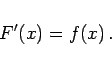
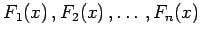

Inhalt Index DeskTop Bronstein

 Integralrechnung Unbestimmtes Integral Stammfunktion oder Integral
Integralrechnung Unbestimmtes Integral Stammfunktion oder Integral


Stammfunktion oder Integral einer gegebenen Funktion y = f(x), die in einem zusammenhängenden Intervall [a,b] definiert ist, wird eine differenzierbare Funktion F(x) genannt, die in demselben Intervall definiert ist und deren Ableitung gleich f(x) ist:
|  | (8.1) |
Da bei der Differentiation einer Funktion eine additiv auftretende Konstante verschwindet, existieren zu einer gegebenen Funktion unendlich viele Stammfunktionen. Die Differenz zweier Stammfunktionen ist eine Konstante. Daher können die Bilder aller Stammfunktionen  zu einer gegebenen Funktion durch Parallelverschiebung einer bestimmten Stammfunktion in Richtung der Ordinatenachse erzeugt werden.